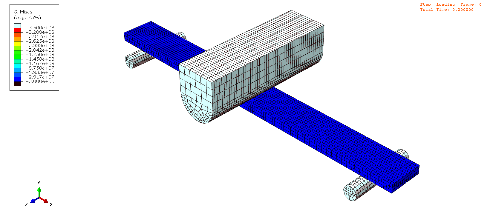
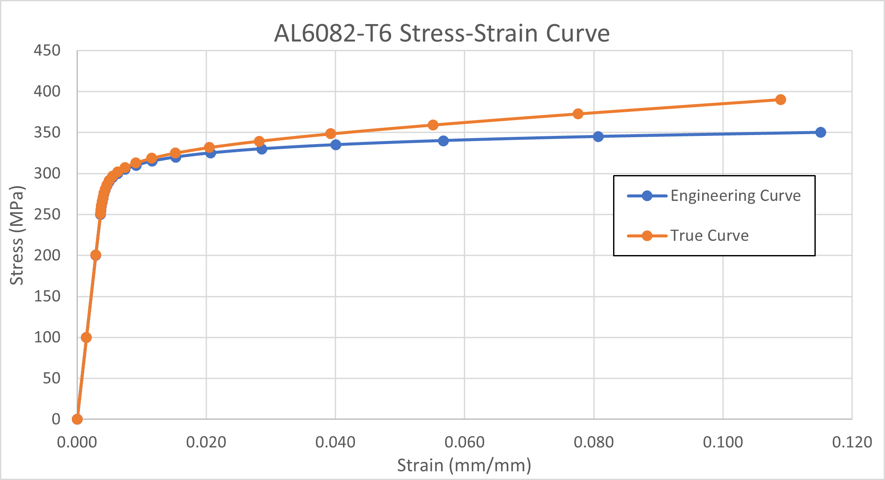
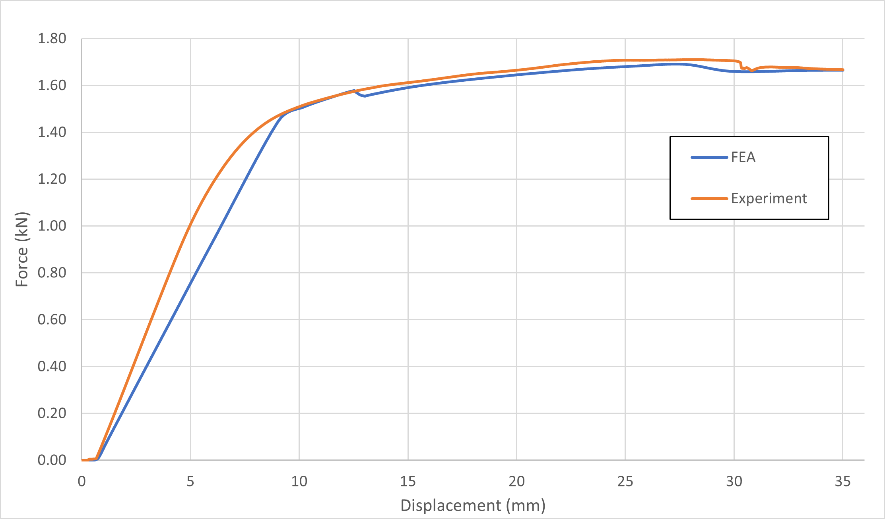

3-Point Bending Test
  Skills :
Description :
A three-point bending test was conducted on an aluminum flat bar made from AL6082-T6 to study its behavior under load. The material’s elastoplastic properties were defined using the Ramberg-Osgood model, which was carefully calibrated to match experimental data. Key properties, such as the elastic modulus, yield strength, and ultimate tensile strength, were initially sourced from the literature and later fine-tuned through iterative adjustments. The goal of this test was to simulate the bending behavior of the bar and validate the accuracy of the finite element analysis (FEA) model.
The test setup involved two cylindrical roller supports placed symmetrically under the flat bar and a loading wedge positioned on top to apply the force. Both the supports and the wedge were modeled as discrete rigid bodies with optimized meshing for efficient and accurate simulations. For the supports, the halves that didn’t contact the bar were meshed with a coarser 5 mm size, while the halves in contact with the bar used a finer 2 mm mesh. The flat bar itself was meshed carefully, with finer elements in areas prone to higher stress, ensuring a good balance between computational efficiency and accuracy.
The results showed a strong agreement between the simulated load-displacement curve and the experimental data. The loading wedge bent the bar by 35 mm, taking it beyond its elastic limit and into plastic deformation. The load-displacement graph closely followed the experimental trends, especially in the yield and plastic regions. Through iterative calibration, yield stress and plastic strain values were adjusted to align the simulation with real-world results. This close match confirmed the FEA model’s ability to accurately replicate the behavior of AL6082-T6 during a three-point bending test, demonstrating the effectiveness of the simulation and optimization process.
Get in Touch
Website designed and developed by me using template provided by HTML5 UP © 2024. All rights reserved.